ABOUT
企業のSNS、広告、LINEを運用し、障がいのある方が働くカフェを運営し、女性向けのオンラインスクールを開き、宮崎の店を紹介するメディアを続けています。 別々の事業に見えて、根っこはひとつです。人が集まる場所をつくり、そこに人が来続ける仕組みを整えること。
代表の名倉は、もともと病院に勤める理学療法士でした。SNSを独学で始め、会社を立ち上げ、いまは支援する側にいます。 だから「何もないところから始める怖さ」の話ができます。運用を代行するだけでなく、社内に残る形をつくることを大事にしています。
BUSINESS
広告を出して終わりではなく、問い合わせが入ったあとの導線、追客のシナリオ、リピートまでを一続きで設計します。 特に力を入れているのがショート動画の企画です。来店のきっかけをつくるのは、きれいな写真や動画ではなく、見た人を引き止める企画だと考えています。 地方は競合がまだ少なく、先に始めた店舗が抜けやすい領域です。
提案する手法は、まず自社アカウントで試しています。アフィリエイトや自社商品の販売を実際に回しているので、 「やったことのない施策」をおすすめすることがありません。
支援事例を見る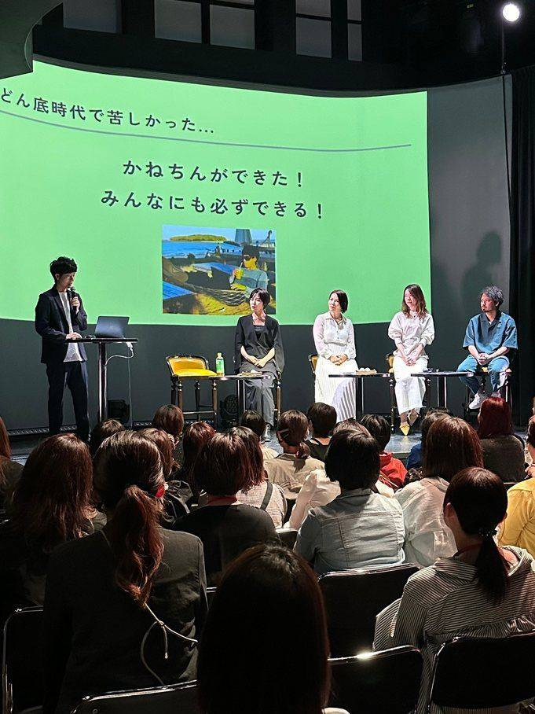
保護された犬や猫とふれあえるカフェを、障がいのある方と一緒に運営しています。接客、調理、店内業務、動物のお世話。 仕事の種類が多いぶん、その人に合う役割が見つけやすい場所です。
お客様にとっては犬猫に会いに来る場所であり、働くメンバーにとっては「働く」を経験する場所であり、 犬猫にとっては次の家族と出会う場所でもあります。保護犬猫の受け入れは保護団体と連携して行っています。
営業時間：平日 12:00–18:00 ／ 土日祝 11:00–18:00 ※トリミングのご予約も承っています。
見学・体験のご相談はいつでも受け付けています。
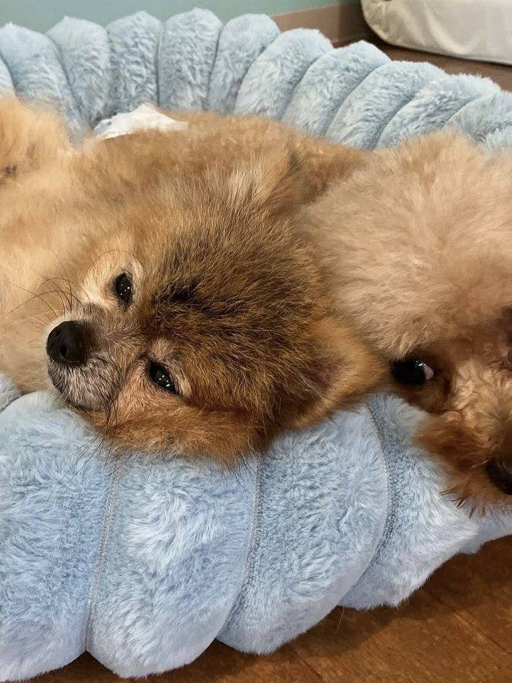
SNSをゼロから始めて、自分の力で収入をつくるところまでを伴走するオンラインスクールです。 家庭や仕事と両立しながら学べる形をとっています。フォロワーを増やすことではなく、商品をつくって届けるところまでを扱います。
受講生の成果を見る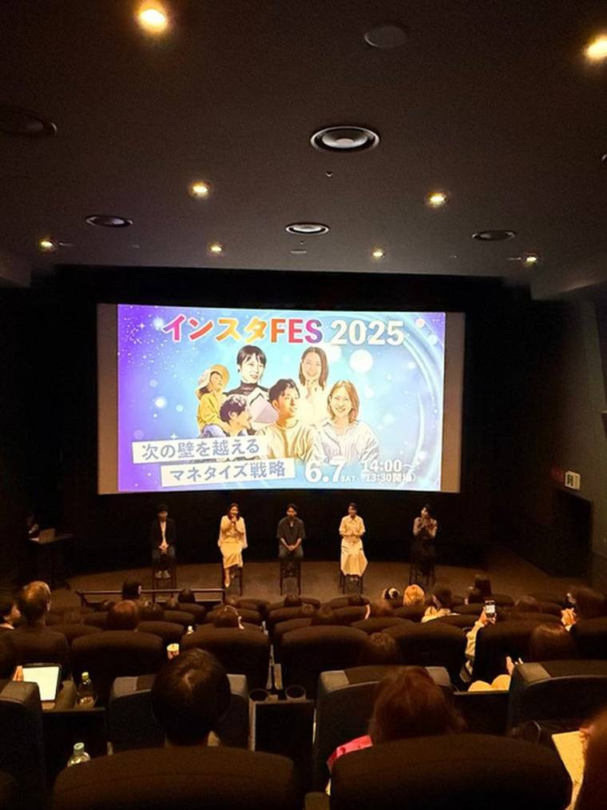
FIGURES
※ 数値は【要記入：集計時点を入れてください（例：2025年◯月時点）】のものです。
RESULTS
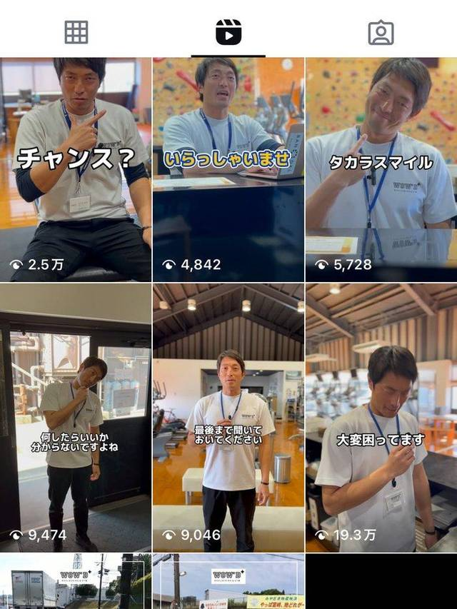
ショート動画の企画から入り、1本目が19万回再生。月額会員が継続的に増える流れをつくりました。
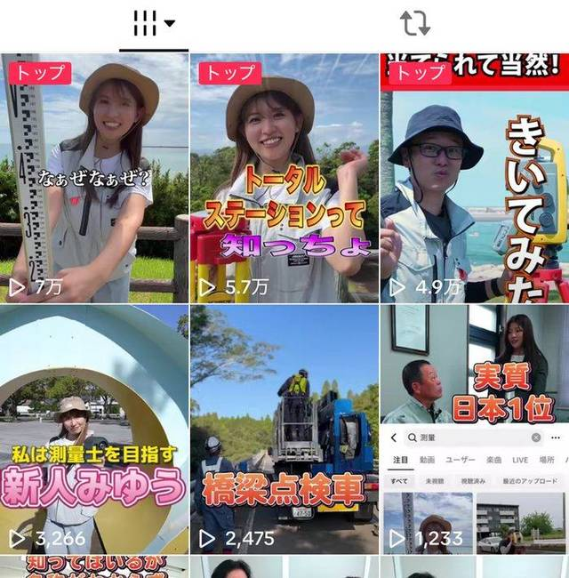
知られていない職業をテーマに発信。平均1万回再生を安定して出し、業界の認知そのものを押し上げました。
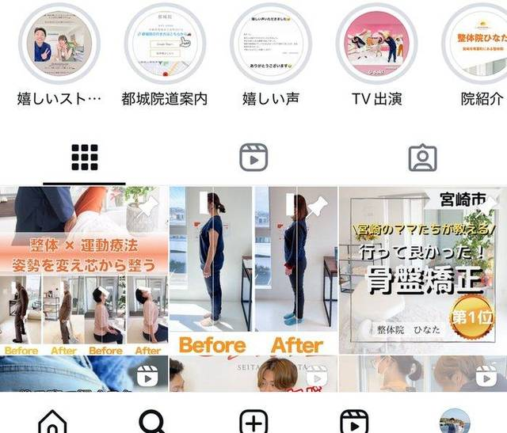
広告に頼っていた集客をSNS経由に振り替え、問い合わせを増やしながら広告費を圧縮しました。
MEDIA & ACTIVITIES
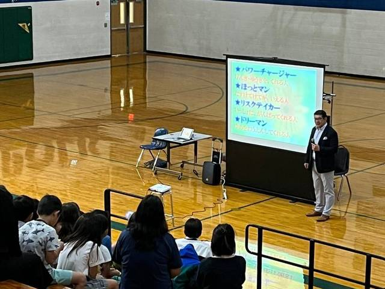
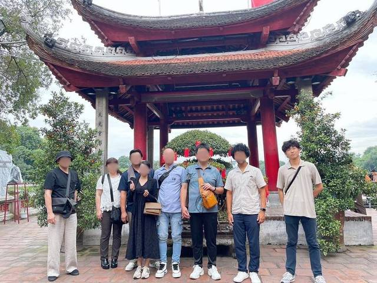
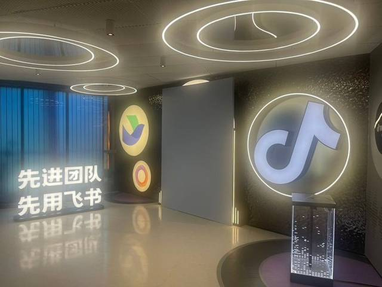
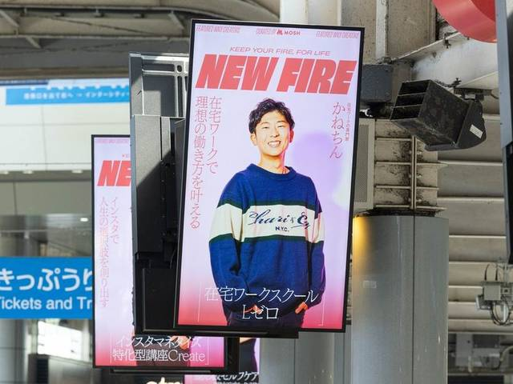
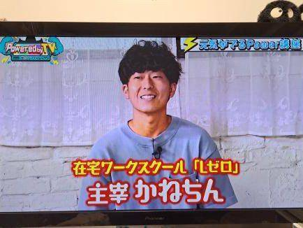
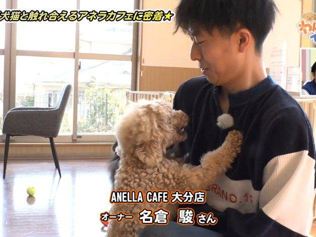
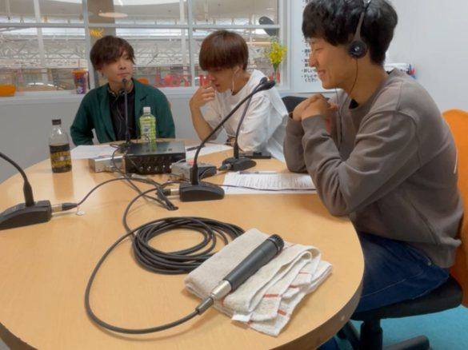
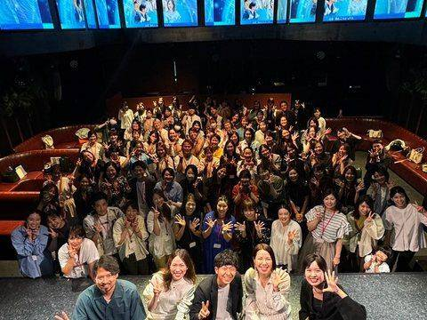
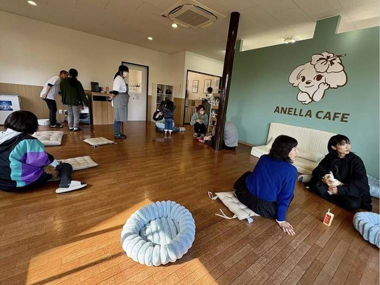
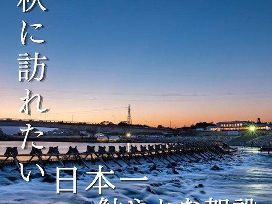
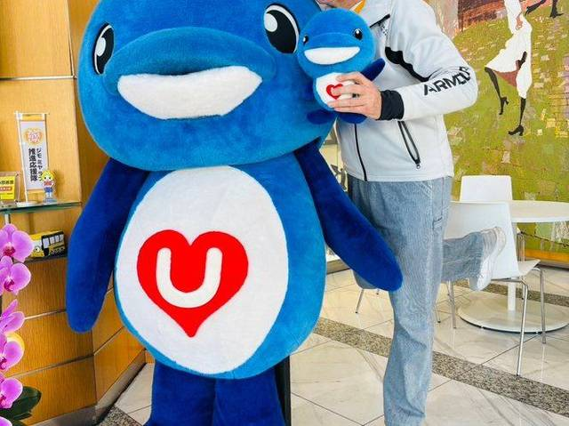
ACCOUNTS
支援先だけでなく、自社でも発信を続けています。Instagramを中心に、TikTok・YouTubeを合わせて8万人以上の方に届いています。実際に運用しているアカウントを見ていただくのが一番早いと思います。
MESSAGE
※以下は資料から起こした下書きです。ご自身の言葉に書き換えてください。ここだけは他社に真似できない文章になります。
もともと私は、病院で働く理学療法士でした。人の身体に向き合う仕事にやりがいはありましたが、 コロナをきっかけに一度立ち止まり、退職して、何の知識もないままSNSの世界に入りました。
手探りで続けるうちに、届けたい人に届く手応えを何度も味わいました。同時に、 発信の場から遠いところにいる人がいることにも気づきました。カフェを始めたのは、その両方に関わりたかったからです。
私たちの理念は「理想の働き方をする人を増やす」ことです。会社の中でも、家の中でも、事業所の中でも、 自分で舵を握れる人を増やしたい。場所をつくることと、人を集めること。宮崎という土地で、この二つを続けていきます。
HISTORY
COMPANY
| 商号 | 株式会社かねちん |
|---|---|
| 代表者 | 代表取締役 名倉 駿 |
| 所在地 | 【要記入：〒000-0000 宮崎県◯◯市◯◯】 |
| 設立 | 令和6年（2024年）2月19日 |
| 資本金 | 75万円 |
| 従業員数 | 10名（社員2名、パート8名） |
| 事業内容 | SNS運用・広告コンサルティング／保護犬猫ふれあいカフェの運営／就労継続支援B型事業所の運営／オンラインスクールの運営／Webメディア「おでかけ隊」・地域情報サイト「まいぷれ宮崎」の運営／地域メディアの運営 |
| 事業所 | アネラカフェ大分（保護犬猫ふれあいカフェ／就労継続支援B型） 営業時間：平日 12:00–18:00 土日祝 11:00–18:00 【要記入：住所・電話番号・定休日】 |
| 許認可 | 【要記入：就労継続支援B型 事業所番号】 【要記入：第一種動物取扱業 登録番号】 ※行政・相談支援事業所が確認する項目です。必ず記載してください。 |
| 連絡先 | 【要記入：TEL 000-0000-0000 ／ info@example.com】 |
SNS運用のご相談、事業所の見学、取材や協業のお問い合わせまで。
内容が固まっていない段階でも構いません。
お急ぎの方はお電話でも：【要記入：電話番号】（平日 9:00–18:00）